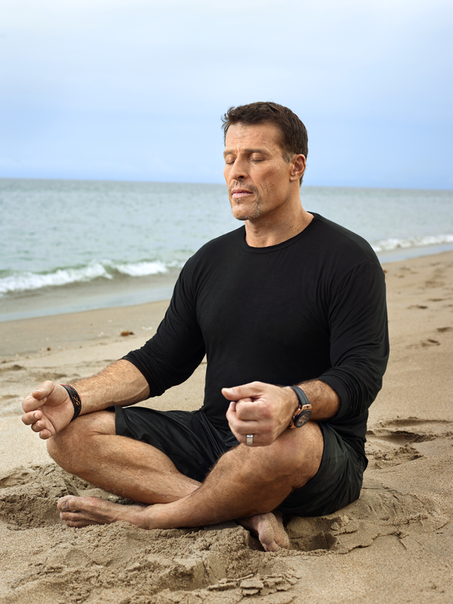
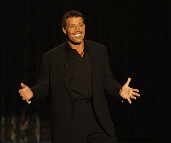

There is a coach that calls himself Tony Robbins.
He has released a new Netflix documentary film about his Date With Destiny event
He has been around the world to 150 countries and talked to hundreds of thousands of people.
Here is a picture below of Tony meditating on the beach (Looks peaceful right?)

One of his more famous quotes is Setting goals is the first step in turning the invisible into the visible
.
He also uses colorful language to emphasize several of his points:
I am a kid from Azusa, California , who did not have any f *** ing certainty,
but I was certain of one thing. I was not about to grow up and have a family that was gonna go through what I went through,
and so I constructed this f *** ing Tony Robbins guy. I constructed him. I created him. He was me, but I built this motherf *** er

Tony here will help people understand their 6 basic human needs. He emphasizes this in relationship issues and has this at the center of a lot of his interventions.
According to this human needs psychology, the 6 needs are: